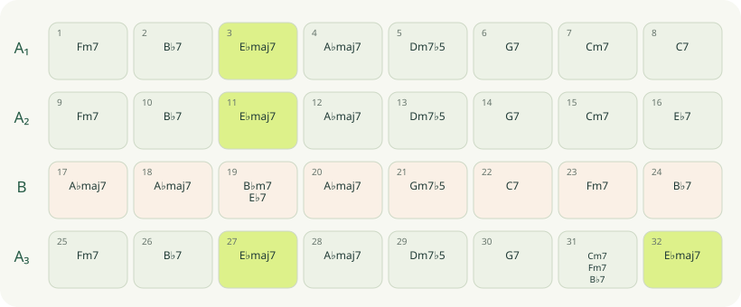

Objectif & résumé général
Lire une grille comme une histoire : des mesures forment des phrases, les phrases construisent des sections, et les sections organisent le morceau. Repérez la forme avant de chercher toutes les substitutions.
Une méthode en cinq lectures
- Convention. Lire la tonalité et vérifier que la grille est destinée au ténor Si♭.
- Temps. Compter les mesures et noter la durée de chaque accord.
- Sections. Repérer les blocs qui reviennent : A, B, retours et fins différentes.
- Destinations. Entourer les accords de repos, puis les dominantes qui les précèdent.
- Cadences. Vérifier les II–V–I majeurs et ii–V–i mineurs avec leurs notes.
Une anacrouse, une introduction et une coda se repèrent séparément. Ne les ajoutez pas arbitrairement aux mesures du refrain.
AABA, ABAC et blues
| Forme | Plan de travail | Question à poser |
|---|---|---|
| AABA de 32 mesures | A₁ : 1–8 · A₂ : 9–16 · B : 17–24 · A₃ : 25–32 | Les fins des trois A sont-elles identiques ? |
| ABAC de 32 mesures | Quatre sections de huit mesures dans ce modèle | Comment le second A prépare-t-il une autre conclusion ? |
| Blues de 12 mesures | Trois groupes de quatre mesures | Où passent I7, IV7 et V7 ? |
Les lettres décrivent des ressemblances de matériau, pas une règle universelle de tonalité. Le pont B peut moduler, mais le nom B n’impose aucune modulation.
Autumn Leaves : majeur et mineur dans la même phrase
Voici une réduction courante des huit premières mesures, en La mineur écrit pour ténor, correspondant à Sol mineur concert. Elle permet de comparer une cadence en Do majeur et une cadence vers sa relative mineure.
| Mesure | Accord écrit ténor | Fonction locale |
|---|---|---|
| 1 | Dm7 | II de Do majeur |
| 2 | G7 | V de Do majeur |
| 3 | Cmaj7 | I de Do majeur |
| 4 | Fmaj7 | IV de Do majeur : liaison entre les deux zones |
| 5 | Bm7♭5 | iiø de La mineur |
| 6 | E7 | V de La mineur : Sol♯ sensible |
| 7 | Am7 | i de La mineur |
| 8 | Am7 | Prolongement de la tonique |
| Accord écrit pour ténor | Notes écrites : français (anglo-saxon) | Tierce / septième ou sixte |
|---|---|---|
| Dm7 | Ré (D) · Fa (F) · La (A) · Do (C) | Fa / Do |
| G7 | Sol (G) · Si (B) · Ré (D) · Fa (F) | Si / Fa |
| Cmaj7 | Do (C) · Mi (E) · Sol (G) · Si (B) | Mi / Si |
| Fmaj7 | Fa (F) · La (A) · Do (C) · Mi (E) | La / Mi |
| Bm7♭5 | Si (B) · Ré (D) · Fa (F) · La (A) | Ré / La |
| E7 | Mi (E) · Sol♯ (G♯) · Si (B) · Ré (D) | Sol♯ / Ré |
| Am7 | La (A) · Do (C) · Mi (E) · Sol (G) | Do / Sol |
Le repos général peut rester La mineur même si une cadence locale éclaire Do majeur. L’arrivée du Sol♯ dans E7 rend le retour à La particulièrement clair. La tonalité et les enrichissements varient selon les éditions.
Le rapprochement entre majeur et relative mineure est présenté dans l’étude d’Autumn Leaves de Dirk Laukens ; l’extrait ci-dessus est transposé et réduit pour le ténor.
Misty : une cadence vers le IV
En Fa majeur écrit pour ténor, correspondant à Mi♭ concert, le début usuel fait entendre | Fmaj7 | Cm7 F7 | B♭maj7 |. L’accord d’arrivée est le IV de Fa, mais devient un I local pendant la cadence.
| Accord écrit pour ténor | Notes écrites : français (anglo-saxon) | Tierce / septième ou sixte |
|---|---|---|
| Fmaj7 | Fa (F) · La (A) · Do (C) · Mi (E) | La / Mi |
| Cm7 | Do (C) · Mi♭ (E♭) · Sol (G) · Si♭ (B♭) | Mi♭ / Si♭ |
| F7 | Fa (F) · La (A) · Do (C) · Mi♭ (E♭) | La / Mi♭ |
| B♭maj7 | Si♭ (B♭) · Ré (D) · Fa (F) · La (A) | Ré / La |
Cm7 → F7 → B♭maj7 est II–V–I en Si♭ majeur. F7 contient Mi♭, alors que Fmaj7 contient Mi naturel. Ce seul changement prépare une nouvelle destination. On parle ici de tonicisation du IV : un éclairage local, sans conclure automatiquement à une modulation durable.
Organisation harmonique : JGC, Misty.
Une étude originale sur 32 mesures
La grille suivante est une composition pédagogique originale AABA, écrite pour ténor en Mi♭ majeur. Elle fournit un terrain complet pour le projet du parcours ; elle ne constitue pas la grille de « Body and Soul ».


| Mesure | Section | Accords écrits et durées |
|---|---|---|
| 1 | A₁ | Fm7 (4 t.) |
| 2 | A₁ | B♭7 (4 t.) |
| 3 | A₁ | E♭maj7 (4 t.) |
| 4 | A₁ | A♭maj7 (4 t.) |
| 5 | A₁ | Dm7♭5 (4 t.) |
| 6 | A₁ | G7 (4 t.) |
| 7 | A₁ | Cm7 (4 t.) |
| 8 | A₁ | C7 (4 t.) |
| 9 | A₂ | Fm7 (4 t.) |
| 10 | A₂ | B♭7 (4 t.) |
| 11 | A₂ | E♭maj7 (4 t.) |
| 12 | A₂ | A♭maj7 (4 t.) |
| 13 | A₂ | Dm7♭5 (4 t.) |
| 14 | A₂ | G7 (4 t.) |
| 15 | A₂ | Cm7 (4 t.) |
| 16 | A₂ | E♭7 (4 t.) |
| 17 | B | A♭maj7 (4 t.) |
| 18 | B | A♭maj7 (4 t.) |
| 19 | B | B♭m7 (2 t.) · E♭7 (2 t.) |
| 20 | B | A♭maj7 (4 t.) |
| 21 | B | Gm7♭5 (4 t.) |
| 22 | B | C7 (4 t.) |
| 23 | B | Fm7 (4 t.) |
| 24 | B | B♭7 (4 t.) |
| 25 | A₃ | Fm7 (4 t.) |
| 26 | A₃ | B♭7 (4 t.) |
| 27 | A₃ | E♭maj7 (4 t.) |
| 28 | A₃ | A♭maj7 (4 t.) |
| 29 | A₃ | Dm7♭5 (4 t.) |
| 30 | A₃ | G7 (4 t.) |
| 31 | A₃ | Cm7 (2 t.) · Fm7 (1 t.) · B♭7 (1 t.) |
| 32 | A₃ | E♭maj7 (4 t.) |
A₁ termine sur C7 pour préparer Fm7 au retour de A₂. La mesure 16 termine sur E♭7, qui conduit au La♭ majeur du pont. Dans B, Gm7♭5 → C7 → Fm7 établit un ii–V–i en Fa mineur, puis B♭7 prépare le retour de A₃. La mesure 31 accélère les changements ; la mesure 32 conclut sur E♭maj7.
Lire une grille, pas seulement des symboles
Compter les quatre blocs
Objectif. Repérer la forme AABA.
Dans l’étude originale, marquez les entrées de section puis comptez un refrain sans instrument à 60 à la noire.
À produire. Une carte de 32 cases.
Réussite. Les entrées sont 1, 9, 17 et 25 ; le total est 128 temps.
Un premier indice
Un indice supplémentaire
Voir la correction expliquée
Comparer deux cadences voisines
Objectif. Lire majeur et relative mineure.
Dans l’extrait d’Autumn Leaves, nommez les deux tonalités locales et la note caractéristique de la seconde dominante.
À produire. Deux analyses de trois accords.
Réussite. Do majeur, La mineur et Sol♯ dans E7 sont identifiés.
Un premier indice
Un indice supplémentaire
Voir la correction expliquée
Comprendre les fins différentes
Objectif. Relier forme et harmonie.
Comparez les mesures 8, 16 et 32. Donnez leurs accords et la destination attendue après chacune.
À produire. Trois flèches annotées.
Réussite. C7 mène vers Fa mineur ; E♭7 vers La♭ majeur ; E♭maj7 conclut.
Un premier indice
Un indice supplémentaire
Voir la correction expliquée
Fiche de révision
Erreurs fréquentes. Confondre répétition de section et identité de sa fin ; ignorer les durées quand plusieurs accords partagent une mesure ; appeler modulation chaque dominante secondaire.
Résumé final. Forme, rythme harmonique et fonctions se lisent ensemble. La cadence est un événement dans une phrase, pas seulement une liste de trois noms.